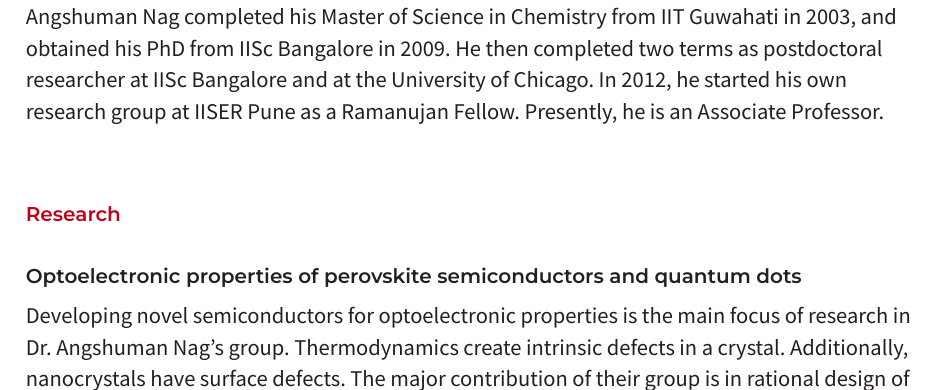

Welcome to Our Data Analysis Website
This website presents the project we made for our data science course: We scrap each faculty's webpage from official institute websites of IISER Pune, IISER Mohali and IISER Kolkata and try to derive something analytic.
About Us
We are a team of data analysts.
1. Kaushik Gupta MS20129
2. Rohit Khandhare MS20234
3. Samannay Bhuyan MS20081
Statistics
Explore our latest statistical data and visualizations:
Data Analysis and Case studies:
We present our data analysis methodologies and case studies:
RAKE
Rapid Automatic Keyword Extraction (RAKE) is a well-known keyword extraction method which uses a list of stopwords and phrase delimiters to detect the most relevant words or phrases in a piece of text.
1. We scraped the section of "research area" and "research focus" sections from each IISER Mohali's faculty webpage and analysed it using some NLP algorithms like RAKE, Keybert, etc.

Keywords Table
| Index | Description | Scores |
|---|---|---|
| 1 | Genome regulation | 10 |
| 2 | Functional Analysis | 8 |
| 3 | Developmental genetics | 7 |
| 4 | Environmental science | 7 |
| 5 | Quantum information | 7 |
| 6 | Soft condensed matter physics | 6 |
| 7 | Archaeology | 5 |
| 8 | Algebraic geometry | 5 |
| 9 | Particle physics | 5 |
| 10 | Molecular cell biology | 5 |
2. Secondly, we scraped the section of "name", "academic background" and "research focus" sections from each IISER Pune's faculty webpage and analysed it using some NLP algorithms like RAKE, Keybert, etc.
